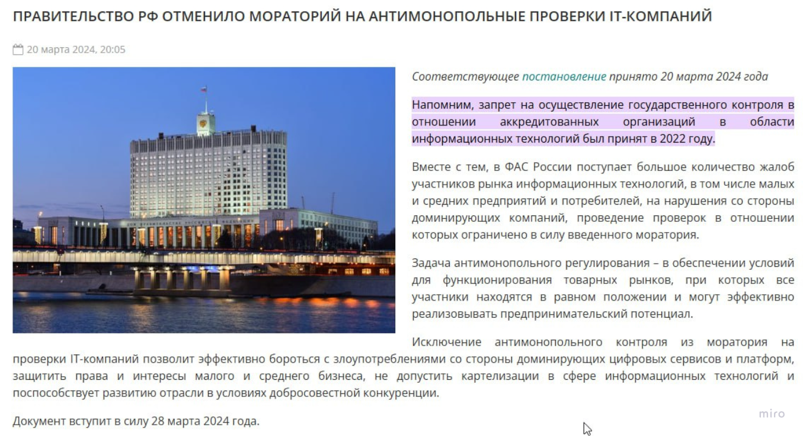

Как монополия яндекс эксплуатирует таксопарки, водителей, курьеров?
Нарушает ли закон яндекс такси?
Сейчас разберемся по порядку, следите за хронологией
Доля заказов Яндекс Такси в РФ = 91% !!!
Яндекс занимает такую долю рынка, что конкуренты не могут предложить альтернативный по качеству сервис в силу несопоставимости бюджетов и масштабов платформы, которая имеет сетевой эффект, включающий в себя разнообразные сервисы. Такие как банк, реклама, маркет
Юридическими словами:
Доминирующим положением признается положение хозяйствующего субъекта (группы лиц) или нескольких хозяйствующих субъектов (групп лиц) на рынке определенного товара, дающее такому хозяйствующему субъекту (группе лиц) или таким хозяйствующим субъектам (группам лиц) возможность оказывать решающее влияние на общие условия обращения товара на соответствующем товарном рынке...
Доминирующим признается положение хозяйствующего субъекта (за исключением финансовой организации):
1) доля которого на рынке определенного товара превышает пятьдесят процентов...
2) доля которого на рынке определенного товара составляет менее чем пятьдесят процентов, если доминирующее положение такого хозяйствующего субъекта установлено антимонопольным органом...
2. ПРАВИТЕЛЬСТВО РФ ОТМЕНИЛО МОРАТОРИЙ НА АНТИМОНОПОЛЬНЫЕ ПРОВЕРКИ IT-КОМПАНИЙ
Что это значит? Теперь любую IT компанию можно привлечь к ответственности за нарушение антимонопольного законодательства.
Если говорить просто, то мы ожидаем привлечение по ст. 14.1 п.2 КоАП РФ, что влечет за собой наложение штрафа, дисквалификацию генерального директора и штраф до 3.9 млрд рублей
 Юридическим языком: Совершение занимающим доминирующее положение на товарном рынке хозяйствующим субъектом действий, признаваемых злоупотреблением доминирующим положением и недопустимых в соответствии с антимонопольным законодательством Российской Федерации... влечет наложение административного штрафа на должностных лиц в размере от двадцати тысяч до пятидесяти тысяч рублей либо дисквалификацию на срок до трех лет; на юридических лиц - от одной сотой до пятнадцати сотых размера суммы выручки правонарушителя...3. Что Яндекс не может делать, но активно продолжает делать?
Сейчас разберем по пунктам
А. Устанавливать высокую и низкую цену
Может быть вы вспомните, какой агрегатор берет большую комиссию чем яндекс такси?
Юридическими словами:
1) установление, поддержание монопольно высокой или монопольно низкой цены товара
Б. Поднимать цены во время повышенного спроса – НЕЛЬЗЯ!
Яндекс не может брать повышенную комиссию!
Юридическими словами:
2) изъятие товара из обращения, если результатом такого изъятия явилось повышение цены товара;
В. Навязывать договор с правилами ущемляющими ваши интересы
- невозможность управлять ценой поездки (для парков и водителей!)
- невозможность узнать причину блокировки
- невозможность управлять своим приоритетом без покупки сервисов яндекс
- невозможность отказаться от найденного клиента без штрафа со стороны сервиса
Да вы и сами все знаете!
Юридическими словами: 3) навязывание контрагенту условий договора, невыгодных для него или не относящихся к предмету договора (экономически или технологически не обоснованные и (или) прямо не предусмотренные федеральными законами... требования о передаче финансовых средств, иного имущества, в том числе имущественных прав, а также согласие заключить договор при условии внесения в него положений относительно товара, в котором контрагент не заинтересован, и другие требования);
Г. Не заключать с вами договор, если вы того попросили
Яндекс не имеет права!
Если вы парк и вам отказали в договоре на передачу заказов, то это пункт про вас. Так делать нельзя!
экономически или технологически не обоснованные отказ либо уклонение от заключения договора с отдельными покупателями (заказчиками) в случае наличия возможности производства или поставок соответствующего товара...Д. Разные условия для разных партнеров, иными словами - дискриминация
Вас заблокировали за нарушения водителями правил сервисом и они теперь работают в другом парке? Это дискриминация вашей организации под предлогом нарушения правил сервиса.
Вы знаете о ситуации, когда некоторые парки имеют особую комиссию или доплаты (парковая поддержка), которых у вас нет? Все это дискриминация, которая создает неконкурентные преимущества у других таксопарков или водителей.
Юридическими словами: создание дискриминационных условий;
Е. Не дать поднять головы конкурентам - главная цель монополии
Поднять доплаты за поездки в регионе, где запускается таксофичков или ситимобил – обычная практика. Доплаты формируют нулевую или отрицательную комиссию. Де-факто продукт стоит 0 - это монопольно низкая цена!
Юридическими словами: создание препятствий доступу на товарный рынок или выходу из товарного рынка другим хозяйствующим субъектам;
Наши требования
Просьба к Правительству, ФАС, прокуратуре и Президенту обратить внимание на ситуацию:
- Привлечь к ответственности по ст. 14.32 КоАП
- Назначить штраф 3.9 млрд рублей
- Установить недискриминационные правила доступа на рынок в соот. с п.5 ст.10 ФЗ 135
Форма для подачи жалобы
Для водителей
- Вас заблокировали в сервисе (яндекс не может по своему усмотрению блокировать вас без объективных параметров, по сути он лишил вас дохода!)
- Вам снизили приоритет за неиспользование сервисов яндекса (это касается всех водителей!)
- Вам снизили приоритет, вы заплатили бОльшую комиссию во время повышенного спроса?
- Навязывание других услуг экосистемы Яндекс (Яндекс пэй, яндекс банк, Яндекс гараж)
Для таксопарков
- С вами расторгли договор из-за нарушения таксистами правил, которых привлек сам яндекс. При этом таксист работает в другом парке?
- Вы не согласились на требования рег менеджеров яндекса о покупке товаров и услуг – с вами расторгли договор?
- Вам повысили цену из-за того, что вы отказались покупать сервисы яндекс
- Вам устанавливают ограничения на то какие авто можно использовать какие нельзя
- Вам заблокировали регистрацию новых водителей!
- Вам запрещают оклеивать свой автомобиль и угрожают ответственностью
Для агрегаторов
- Во время запуска в новом регионе вы получили отток исполнителей из-за больших доплат Яндекса?
- У вас есть факты угроз со стороны Яндекса в адрес таксопарков за работу с другими агрегаторами (они называют это мульти апп)
- Блокирование доступа к сервисам яндекс карты или установление чрезмерно высокой цены
- Субсидирование поездок со стороны яндекс плюс до 20% стоимости любой поездки, чего другой агрегатор себе позволить не может
Для банков
- Яндекс демпингует ваши ставки, при этом зарабатывая доп маржу через привлечение таксопарков. Он готов доплачивать, чтобы отжать у вас транзакционный объем
- Яндекс конкурирует с вами сервисами кэшбека – нечестная конкуренция
- Для банков и подразделений – мы напишем кастомную жалобу для того чтобы запретить любое такое злоупотребление!
Итог
Если вы таксопарк, прикиньте сколько комиссий заработал яндекс, сколько вы могли заработать, а сколько заработал Яндекс. Напишите заявление, и если ФАС признает Яндекс нарушителем, мы поможем составить иск и взыскать недополученную выгоду.
Резюмируя все вышесказанное, подсветив всем известные вам ситуации, мы хотим обратить внимание на несправедливость, которая приносит реальный ущерб, в тяжелое для страны время (высокая инфляция, высокие ставки ЦБ) в этот самый момент яндекс провоцирует новое вопиющее нарушение.
Просьба ЦБ и Тараса Скворцова вмешаться в ситуацию, так как злоупотребление в том числе происходит со стороны яндекс банка, используя сетевой эффект.
Альтернативный способ связи:
Вы также можете отправить информацию напрямую на почту: taxi19@proton.me
Вы также можете отправить информацию напрямую на почту: taxi19@proton.me